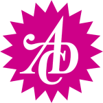

UNICEF THE SECOND-HAND APP STORE

A new way of buying apps, while also helping out with a good cause. Instead of deleting the apps you no longer need but paid good money for, drag them into the Second-Hand App. Here, others can buy them at a lower "second-hand" price and the rest gets donated to any of your desired UNICEF projects.
CREDITS: Concept, Copy & Illustrations - Alex Petrache | Art Direction & Motion Graphics - Tiffiny Li
Instructors: Niklas Frings-Rupp, Miami Ad School Europe
RECOGNITIONS: BRONZE - ADC Germany | FINALIST - YOUNG GUNS